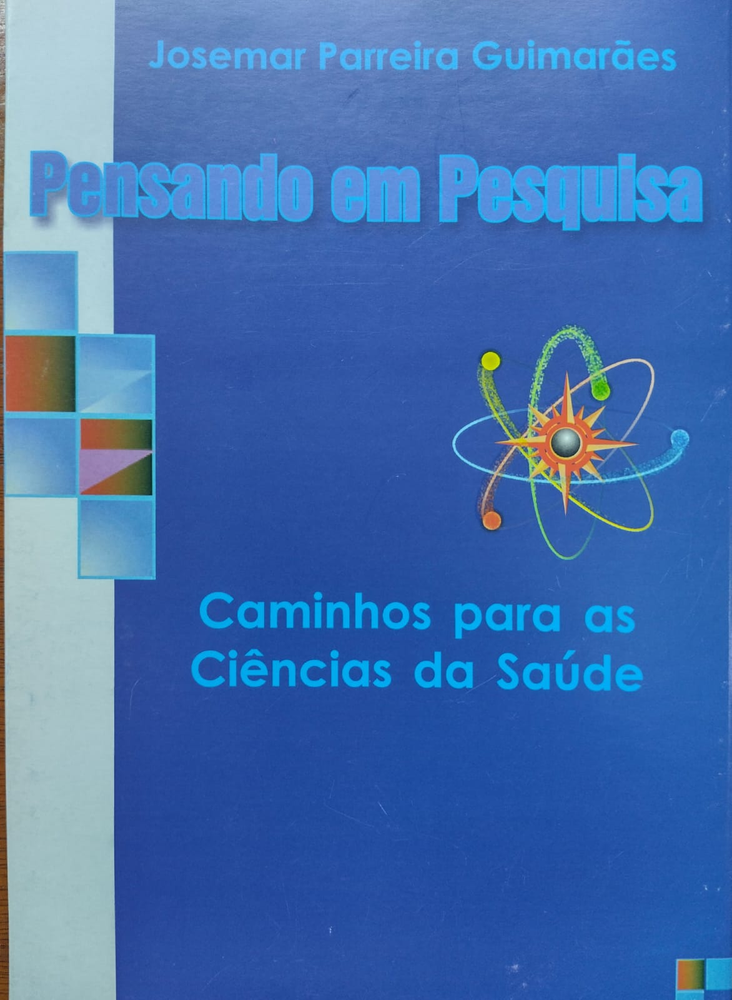
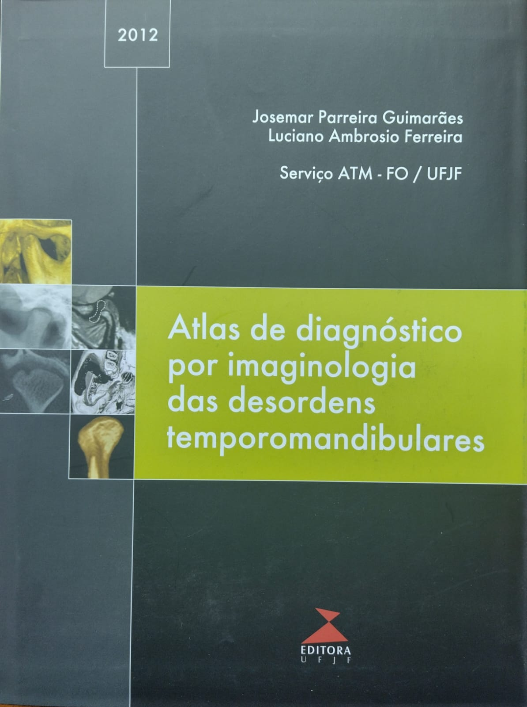
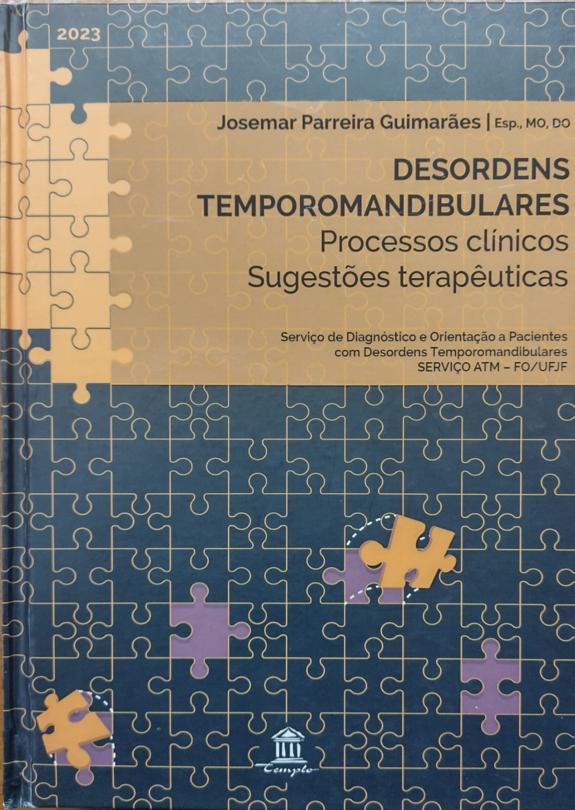

Prof. Dr. Josemar Parreira Guimarães
-
Formação clínico-científica:
- Graduação em Odontologia pela FO/UFJF; e
- Especialista, Mestre e Doutor em Ciências Odontológicas nas áreas de Desordens temporomandibulares (DTM), Ortodontia e Patologia Bucal pela FO/UFRJ.
-
Atividade no Magistério superior:
-
UFJF
- Prof. Titular - FO/UFJF (1991-2024) – 33 anos;
- Coord. SERVIÇO ATM – FO/UFJF (1992-2024) – 32 anos;
- Coord. Especialização em DTM/DOF FO/UFJF durante 4 anos;
- Coord. Programa de Mestrado em Odontologia – FO/UFJF (2 anos);
- Prof. Convidado FO/UFJF atualmente;
- Professor Pesquisador PROPESQ/UFJF e PLATBRASIL/CEP/CONEP – Desde 1992; e
- Presidente da Comissão de Biossegurança – COVID 19 - da Faculdade de Odontologia da UFJF
-
FCMSJF/SUPREMA
- Prof. Adjunto Faculdade de Odontologia da FCMSJF/SUPREMA durante 7 anos;
- Coord. Liga da Dor – FCMSJF/SUPREMA; e,
- Coord. Especialização em Ortodontia FCMSJF/SUPREMA durante 7 anos
-
CESVA/VALENÇA
- Prof. Titular da Faculdade de Medicina de Valença durante 5 anos; e,
- Coord. da Liga da Dor da Faculdade de Medicina de Valença durante 5 anos
-
-
Produção científica:
- Acima de a 100 participações em eventos, jornadas e congressos científicos;
- Acima de 420 orientações de alunos em monitorias, Trabalhos de Conclusão de Curso de Graduação (TCC), Iniciação Científica, Programas de Extensão, Trabalhos de Conclusão em Programas de Pós-graduação lato sensu e em Programas de Pós-graduação stricto sensu– Mestrado;
- Acima de 150 publicações de artigos e de resumos em 32 periódicos nacionais e internacionais;
- Publicação de três livros sobre os assuntos Metodologia Científica e Desordens Temporomandibulares (DTM);
- Acima de 180 apresentação de trabalhos sobre a forma palestras, painéis e cursos; e,
- Acima de 180 participações em Bancas de Trabalho de Conclusão de Cursos (TCC) na graduação e Pós-graduação (latu sensu e strictu sensu), monitoria, concurso público e eventos acadêmicos.
-
Produção clínica:
- 04 décadas de exercício da Odontologia:
- Atendimento a mais de 14.000 pacientes com Desordens temporomandibulares (DTM) no SERVIÇO ATM e na disciplina de DTM da FO/UFJF e na Liga da Dor e disciplina de DTM da SUPREMA; e,
- Atendimento a mais de 4.000 pacientes com Desordens temporomandibulares (DTM), Distúrbios oclusais (Ortodontia) e necessidade clínicas gerais em clínica privada.
-
Homenagens no magistério superior:
- 25 homenagens de turmas de graduação da FO/UFJF, FO-FCMSJF/SUPREMA e CESVA/Faculdade de Medicina, como paraninfo, nome de turma e patrono; e
- Agraciado com o nome da Liga/Programa de Extensão de Dor Orofacial da FCMSJF-SUPREMA “Liga de Dor Orofacial Prof. Josemar Guimarães”;
-
Premiações como Professor pesquisador:
- Agraciado em 3º Lugar pela apresentação de Tema Livre. 3ª Congresso Interdisciplinar de Disfunção Temporomandibular e Dor Orofacial (CIDOF);
- Agraciado em 1º Lugar no VI Concurso de Monografias do 17º Congresso Internacional de Odontologia do Rio de Janeiro - CIORJ, 17º Congresso Internacional de Odontologia do Rio de Janeiro - CIORJ;
- Agraciado em 1º Lugar no Prêmio Vídeo Odontológico. Mostra Latino-americana de vídeos científicos;
- Agraciado em 1º Lugar em dois eventos do Prêmios Quiral Química do Brasil de Melhor Orientação de Pesquisa de Iniciação Científica da UFJF, Universidade Federal de Juiz de Fora;
-
Homenagens no campo pessoal:
- Agraciado com a “Comenda do Mérito Mercadante”, Câmara Municipal de Além Paraíba – MG;
- Agraciado com a “Comenda AMAJF de Ecologia”, AMAJF - Associação pelo Meio Ambiente de Juiz de Fora; e,
- Agraciado como Cidadão honorário de Simão Pereira-MG, Prefeitura Municipal de Simão Pereira - MG.
Publicação científica
Livros publicados



Artigos
Acima de 80 artigos em 32 periódicos nacionais e internacionais, entre eles:
- Estudio radiografico de las alteraciones mofologicas de la apoofises estiloide y de la roiacion del condilo mandibular em pacientes con desroden temporomandibular. In: Acta Odontologica Venezolana, v.48, p.1-13, 2010.
- Temporomandibular disorder in patients with juvenile idiopathic arthritis: clinical evaluation and correlation with the findings of cone beam computed tomography. In: Oral Surgery, Oral Medicine, Oral Pathology, Oral Radiology and Endodontics, v.114, p.e51-e5, 2012.
- Palpation and pressure pain threshold: reliability and validity in patients with temporomandibular disorders. In: Journal of Craniomandibular Practice, v.26, p.1-9, 2008.
- Fatores psicológicos relacionados à sintomatologia crônica das desordens temporomandibulares: revisão de literatura. In: Revista da Faculdade de Odontologia - Universidade de Passo Fundo, v.14, p.262-267, 2009.
- Associação entre os hábitos bucais deletérios e as desordens temporomandibulares: os filhos imitam os pais na adoção destes costumes? In: Pesquisa Brasileira em Odontopediatria e Clínica Integrada, v.11, p.363-369, 2012.
- Inter-relação entre alterações otológicas e DTM em paciente fibromiálgico: caso clínico. In: Revista da Associação Paulista de Cirurgiões-Dentistas, v.66, p.206, 2012
- Laser acupuncture in patients with temporomandibular dysfunction: a randomized controlled trial. In: Lasers in Medical Science, v.28, p.10.1007/10103-1558, 2013.
- A study of the association between sleep bruxism, low quality of sleep, and degenerative changes of the temporomandibular joint. In: The Journal of Craniofacial Surgery, v.26, n.8, p.2347-2350, 2015.
- Associação entre hipermobilidade articular sistêmica e desordens temporomandibulares: uma investigação clínico-radiográfica. In: Arquivos em Odontologia da Universidade Federal de Minas Gerais (UFMG), v.52, p.94, 2016.
- Association between temporomandibular disorders and pain in other regions of the body. In: Journal of Oral Rehabilitation, 2016.
- Influence of food supplementation with omega 3 on the remission of centrally mediated chronic myalgia. In: Revista Gaúcha de Odontologia (RGO), v.59, p.555-563, 2011.
- Frequency of temporomandibular disorder diagnosis: a study on 102 patients undergoing dental treatment. In: Revista Sul Brasileira de Odontologia (RSBO), v.12, p.172-178, 2015.
- Evaluation of depressive symptoms and quality of live in individuals with tinnitus and temporomandibular disorder. In: Revista Saúde e Pesquisa, v.9, n.3, p.415-423, 2016.
- Avaliação da comorbidade entre desordem temporomandibular e síndrome pré-menstrual: características clínicas e terapêuticas. Revista do Serviço ATM, Juiz de Fora, v. 1, n. 1, p. 33-39, n. 2001.
- Estudo clínico da eficácia da estimulação neural elétrica transcutânea (tens) e microcorrente elétrica (MET) no alívio sintomatológico das desordens temporomandibulares- projeto piloto. Revista do Serviço ATM, Juiz de Fora, v. 2, n. 2, p. 29-37, n. 2002.
Periódicos utilizados para publicação de Artigos
- Acta Odontológica Latinoamericana
- Acta Odontologica Venezolana
- Arquivos em Odontologia da Universidade Federal de Minas Gerais (UFMG)
- Brazilian Dental Science
- Caderno de Iniciação Científica
- Cranio. Journal of Craniomandibular Practice
- HU Revista– Universidade Federal de Juiz de Fora (UFJF)
- JBO. Jornal Brasileiro de Ortodontia & Ortopedia Facial
- Journal of Craniomandibular Practice
- Journal of Oral Rehabilitation
- Lasers in Medical Science
- Oral Surgery, Oral Medicine, Oral Pathology, Oral Radiology and Endodontics
- Pesquisa Brasileira em Odontopediatria e Clínica Integrada
- PRINCIPIA - Caminhos da Iniciação Científica
- Radiologia Brasileira
- Revista do CRO de Recife. Odontologia Clínico-Científica
- Revista Brasileira de Ciências da Saúde
- Revista Brasileira de Odontologia
- Revista Brasileira de Ortodontia e Ortopedia Dento-Facial
- Revista Clínica de Ortodontia Dental Press
- Revista da Associação Paulista de Cirurgiões-Dentistas
- Revista da EAP/APCD
- Revista da Faculdade de Odontologia - Universidade de Passo Fundo
- Revista da Sociedade Brasileira de Ortodontia
- Revista da Sociedade Paulista de Ortodontia
- Revista Dental Press de Ortodontia e Ortopedia
- Facial Revista do CRO-MG
- Revista Saúde e Pesquisa
- Revista Sul Brasileira de Odontologia (RSBO)
- Revista Gaúcha de Odontologia - RGO
- Sociedade Brasileira de Periodontologia
- The Journal of Craniofacial Surgery
Publicação de Resumos em anais de congressos nacionais e internacionais.
- Avaliação da prevalência de assimetria facial em pacientes portadores de desordem temporomandibular. In: Brazilian Oral Research. 25ª Reunião da Sociedade Brasileira de Pesquisa Odontológica (SBPqO). Annual meeting, anais eletrônicos, p.89, 2008.
- O macrotrauma associado a um fator desencadeante de desordem temporomandibular. In: Brazilian Oral Research. 25ª Reunião da Sociedade Brasileira de Pesquisa Odontológica (SBPqO). Annual meeting, anais eletrônicos, p.71, 2008
- Prevalência de assimetrias e aplainamentos da articulação temporomandibular em pacientes portadores de desordem temporomandibular. In: Brazilian Oral Research. 26ª Reunião da Sociedade Brasileira de Pesquisa Odontológica (SBPqO). Annual meeting, anais eletrônicos, p.273, 2009.
- Estudo dos sinais e sintomas prevalentes das desordens temporomandibulares em crianças e sua interrelação com hábitos parafuncionais. In: Brazilian Oral Research. 27ª Reunião da Sociedade Brasileira de Pesquisa Odontológica (SBPqO). Annual Meeting, anais eletrônicos, v.24, p.310, 2010.
- Toxina botulínica: alternativa terapêutica para quadros de desordem temporomandibular. In: Congresso Internacional da APCD, São Paulo, anais eletrônicos, p.283, 2011.
- Terapia por acupuntura auricular em pacientes com diagnóstico ocidental de desordem temporomandibular: um ensaio clínico controlado. In: 30ª CIOSP, São Paulo, anais eletrônicos, p.224, 2012.
- Frequency of diagnosis of temporomandibular disorder in pacients attended by the aculty dentistry of universidade federal de juiz de fora. In: Brazilian Dental Science. 4º Congresso Interdisciplinar de Disfunção Temporomandibular e Dor Orofacial (CIDOF), v.17, 2014.
- Associação entre hipermobilidade articular sistêmica e desordens temporomandibulares: uma investigação clínico-radiográfica. In: 33ª CIOSP, São Paulo, anais eletrônicos, p.167, 2015.
- Avaliação clínica dos autocuidados em pacientes com bruxismo em vigília. In: Brazilian Oral Research. 34ª Reunião da Sociedade Brasileira de Pesquisa Odontológica (SBPqO). Annual meeting, anais eletrônicos, p.553, 2017.
- Trauma e instabilidade oclusal como fatores etiológicos da osteoartrite nas ATM: relato de caso. In: Arch Healt Invest, v.6, (Special Issue 1- ISSN 2317-3009). Encontro do Grupo Brasileiro de Reciclagem em Prótese e Implante, 2017.